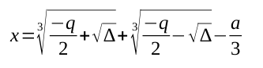
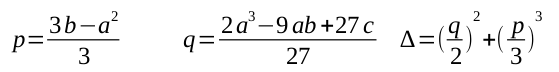
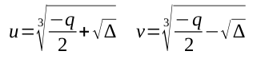
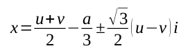
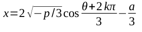
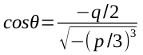

Cardano y Ferrari se pasan la noche trabajando partiendo del trabajo de Tartaglia en conjunto, hasta que sus trabajos rinden frutos y logran al fin establecer una ecuación general para las ecuaciones cúbicas, la cual establece:
Sea K un cuerpo de característica distinta de 2 o 3 y sean 𝑎, 𝑏, 𝑐, 𝑑 ∈ 𝑘, las raíces de la ecuación: 𝑥3 + 𝑎𝑥2 + 𝑏𝑥 + 𝑐 = 0, se pueden obtener a partir de 3 casos.
El primer caso establece que todas las raíces serán reales y al menos 2 de ellas serán iguales si 𝛥 = 0.
Cuando se tiene una raíz real, está la podremos encontrar a partir de:
En donde:
Sin embargo, para este caso en particular existen 2 posibilidades:
El caso dos establece que la ecuación tiene una raíz real y dos raíces imaginarias si 𝛥 > 0.
Cuando se tengan raíces imaginarias, estas se pueden obtener a partir de:
Donde las raíces cúbicas u y v son reales. Las otras dos raíces son imaginarias, y vienen dadas por:
El caso tres establece que la ecuación tiene 3 raíces reales simples si 𝛥 < 0.
Cuando se tengan raíces reales simples, están pueden obtenerse a partir de
Donde k = 0, 1, 2 y el ángulo 0 < θ < π está determinado por:
